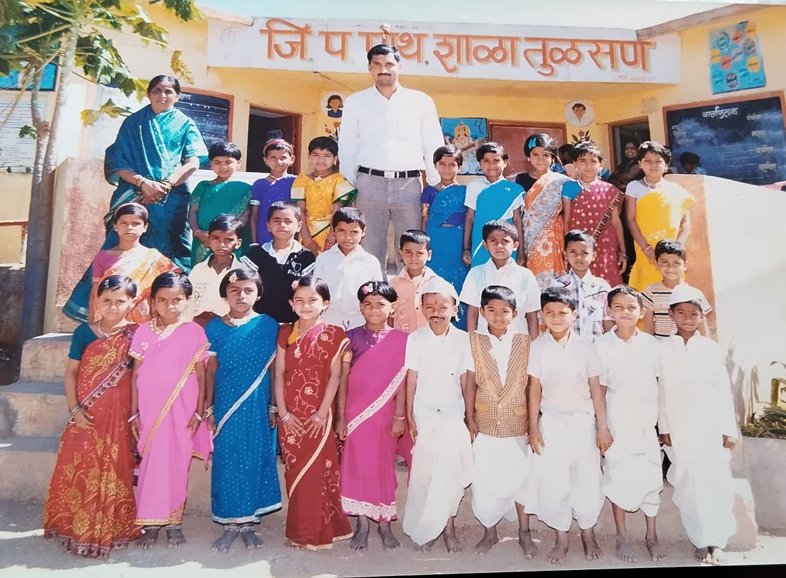

There was laughter, joy, and the simple magic of being carefree.
Every morning at school felt brighter when we were together.
We may have grown up, but those moments are still here...
Want to revisit them?
And then there was your performance... that song still echoes 🎶
“Some memories never fade — they wait quietly for a smile to bring them back.” 💫
